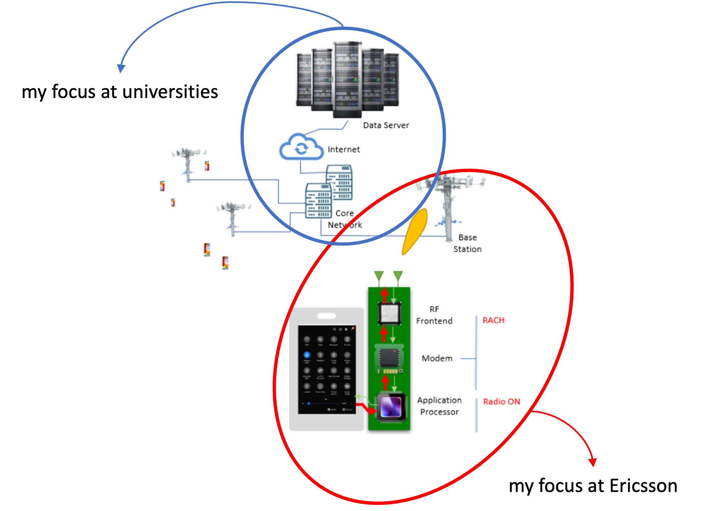
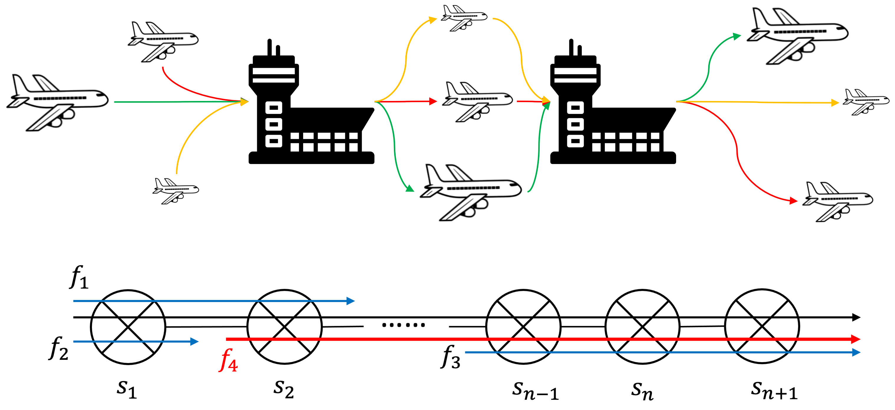

For me, building networked systems is like assembling Lego/IKEA furniture. As the researcher and engineer, I am responsible for designing both the pieces and the instruction manual.
🚩 Fantasic News 🚩
Huge congratulations to Zhou Guanyu for scoring the first point for Kick Sauber this season! We all know how challenging it has been to race this car throughout the season. What an incredible journey!
About Myself
I am currently the first-year PhD student specializing in Sustainable Networking with The Network Systems Group (NSG) at ETH Zurich under the supervision of Prof. Laurent Vanbever and Dr. Romain Jacob.

My research interest, in one single sentence, is the design and optimization of networked system. Specifically, it straddles the complex domain of networked systems and its interdisciplinary interfaces, include but not limited to:
Network resource allocation and deployment
The research on Network Calculus itself and its application in the design of performance guaranteed networked systems
The application of machine learning and game theory in the optimization of networked systems
Do I Really Love My Research Direction?

When I was young, I harbored dreams of becoming a pilot or aircraft designer, but my high myopia made this path unattainable. However, this setback led me to find a different kind of ‘cloud’ to contribute to - cloud computing. Emotionally, I see parallels between cloud computing and airplanes: both serve as carriers, transporting passengers or network packets from sources to destinations.
My curiosity extends beyond the technicalities of the human element - how these journeys impact people’s lives and emotions. I recall a poignant moment on a flight where a passenger behind me wept over a relative’s health issue. Besides, this belief is reinforced during a recent Taylor Swift concert in Stockholm, where I struggled to share joyful moments with my love due to network congestion caused by the high density of data usage in the arena (though I believe it might be the issue of WeChat, because FaceTime could function well:/).
I wished I could have the ability to build faster networked systems, capable of conveying human sentiments and concerns more swiftly. This experience fueled my aspiration for cloud computing to evolve beyond a mere technological marvel. I envision it as a medium that not only enhances efficiency but also connects and empathizes with human emotions.
Fun Facts
I hold the habit of taking photographs, and I focus more on the landscape where you can find my gallery on the tap above.
I can't say no to food all over the world, and I try to learn as much as possible where you can also find what I've cooked on the tap above.
I am willing to do some sports that are usually sponsored by Red Bull. Skiing in the Swiss Alps during the winter ⛷️ (The Swiss black path is still challenging for me, but I can handle the blue and red ones without any difficulties) and diving in the Mediterranean during the summer 🤿 have been my annual sacred cow. Yes, I have an open water diving certificate. I also have a plan to upgrade my diving certificate to an advanced one and perhaps try to do underwater photography.
I travel quite a lot, and I've been to Thailand, Japan, the US, the UK, Netherlands, Finland, Sweden, Austria, Switzerland, France, Spain, Italy, Danmark, Norway, Germany, Iceland, Monaco, Malta, Andorra and Belgium.
I don't drink alcohol. It is not because I don't want or I'm not allowed. It is because I'm allergic to alcohol, which makes me lose lots of fun in Europe.
I'm a Barcelona loyalist, and I've been watching Barcelona games since 2010.
I've always been deeply passionate about racing, which has fueled my obsession with performance cars—especially the Ferrari SF90. That said, practicality might win out in the end, and I'll likely settle for a more budget-friendly car.